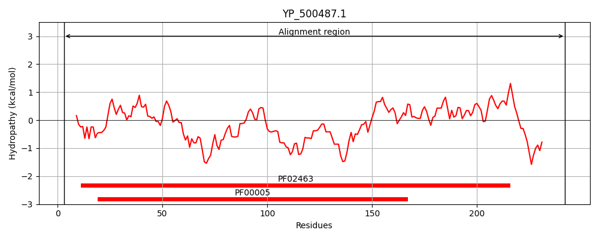
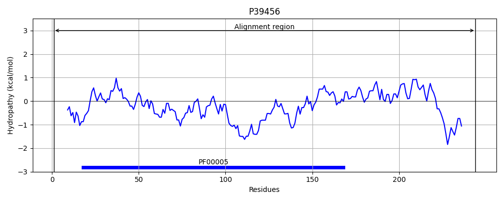
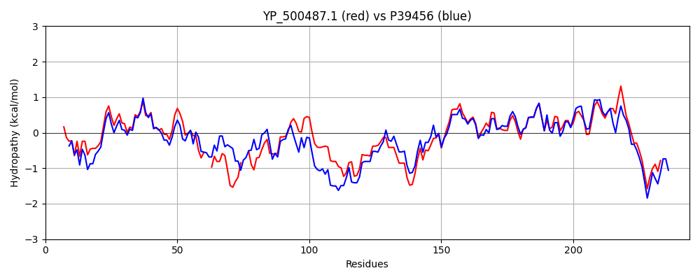

Hit Accession: P39456
Hit TCID: 3.A.1.3.14
Hit Description: gnl|BL_ORD_ID|10268 gnl|TC-DB|P39456|3.A.1.3.14 Probable amino-acid ABC transporter ATP-binding protein yckI - Bacillus subtilis.
Mach Len: 244
e:0.000000
Query TMS Count : 0
Hit TMS Count: 0
TMS-Overlap Score: 0.000000
Predicted Substrates:CHEBI:4052;cystine
BLAST Alignment:
Score: 747 , Bit scores: 292 bits, E-value: 1.4e-100, Alignment length: 244, Percentage identity: 58
Query: 3 VIKINNLNKVFGDNEVLKDINLEINQGEVVAIIGPSGSGKSTLLRCMNLLEVPTKGQVIFE--GNDLTEKGTQVD--KLRQKMGMVFQNFNLFPHKKVVDNIILAPKLLKKDNNDELHKEALSLLDKVGLKEKADVYPNQLSGGQKQRVAIARALAMHPDVILFDEPTSALDPEVVGDVLKVMKDLAKEGMTMVVVTHEMGFAKDVSDKVIFMADGVVVESGTPVEIFEQPQHERTQNFLARVL 242
++ + LNK FG+NE+LK I+++I +G+V+AI+GPSGSGK+TLLRC+N LE+P +G++ F+ D ++K Q D KLR+K GMVFQ ++LFPH+ ++N++ P ++K N +E+ KEA+ LLDKVGLK+K D+YP QLSGGQ+QRV IARALA+ P+++LFDEPTSALDPE+VG+VLKV+KDLA EG TMVVVTHE+ FA++V+D+VIF+ GV+VE G P +IF P+ ERTQ FL R+L
Sbjct: 1 MLTVKGLNKSFGENEILKKIDMKIEKGKVIAILGPSGSGKTTLLRCLNALEIPNRGELAFDDFSIDFSKKVKQADILKLRRKSGMVFQAYHLFPHRTALENVMEGPVQVQKRNKEEVRKEAIQLLDKVGLKDKMDLYPFQLSGGQQQRVGIARALAIQPELMLFDEPTSALDPELVGEVLKVIKDLANEGWTMVVVTHEIKFAQEVADEVIFIDGGVIVEQGPPEQIFSAPKEERTQRFLNRIL 244 | Protein Hydropathy Plots: |
|---|
|  |  |
Pairwise Alignment-Hydropathy Plot:
|
|---|
|  |